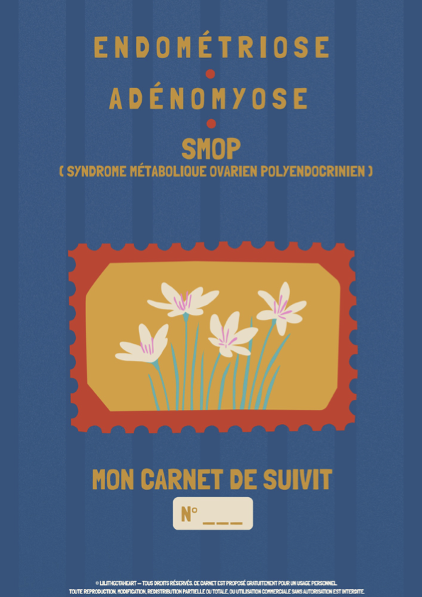
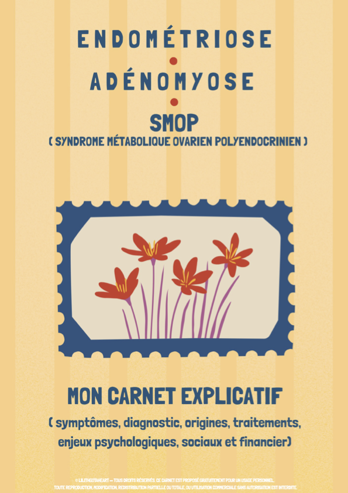

Bienvenue
Je suis Marlène, alias LilithGotAHeart. Étant concernée et atteinte moi-même par l'endométriose, l'adénomyose et le S.M.O.P., j'ai créé ces carnets à partir de mon propre parcours et de ce que j'aurais aimé avoir à mes côtés dès l'apparition de mes premiers symptômes. Consciente que vivre avec ces pathologies peut représenter une charge financière importante, notamment pour accéder à certains outils, supports ou accompagnements complémentaires pouvant aider et soulager au quotidien, j'ai souhaité proposer ces outils gratuitement afin que chacun·e puisse en bénéficier sans que l'argent soit un frein. Ces carnets ont donc été pensés pour t'aider à mieux comprendre ces pathologies, suivre tes symptômes au quotidien, préparer tes rendez-vous, observer l'efficacité de tes différents soins et traitements, observer et mieux comprendre le fonctionnement de tes cycles, observer l'impact de ta ou tes pathologies sur ta vie professionnelle ou scolaire, ainsi que calculer leur impact financier.
Découvrir les carnets

Carnet de suivi
Un espace pour noter tes symptômes, tes douleurs, tes traitements, tes rendez-vous, ton quotidien, ainsi que l'évolution de ton parcours.
📖 Consulter le carnet
Carnet explicatif
Un carnet pour comprendre l'endométriose, l'adénomyose et le S.M.O.P : symptômes, diagnostic, traitements, enjeux psychologiques et sociaux.
📖 Consulter le carnet🌈 Télécharger les deux carnets
Retrouve les deux carnets réunis dans un seul fichier. Tu peux les conserver, les imprimer en fonction de tes besoins ou les partager autour de toi.
( Toute reproduction, modification ou utilisation commerciale des carnets est strictement interdite )
📥 Télécharger gratuitement le pack completMa démarche
Ce projet est né de la volonté de proposer un outil gratuit, accessible et inclusif à toutes les personnes concernées par l'endométriose, l'adénomyose et le S.M.O.P.
Comme expliqué précédemment, ces pathologies peuvent engendrer des difficultés financières. J'ai donc souhaité que cet outil reste gratuit afin que son accès soit possible pour le plus grand nombre.
J'ai également eu la volonté de proposer des supports plus inclusifs. Après l'achat de plusieurs carnets existants j'ai remarqué qu'ils s'adressaient principalement aux femmes cisgenres, oubliant trop souvent la diversité des personnes concernées par ces pathologies
Ces carnets ont donc été pensés pour prendre en compte les réalités de vie de chacun.e.